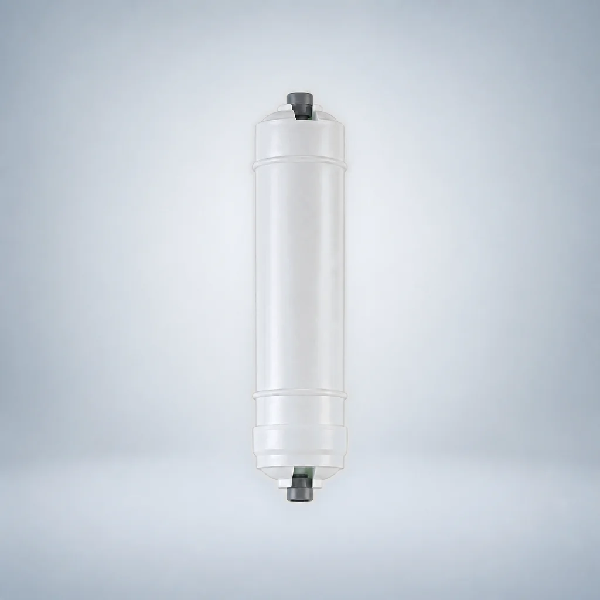
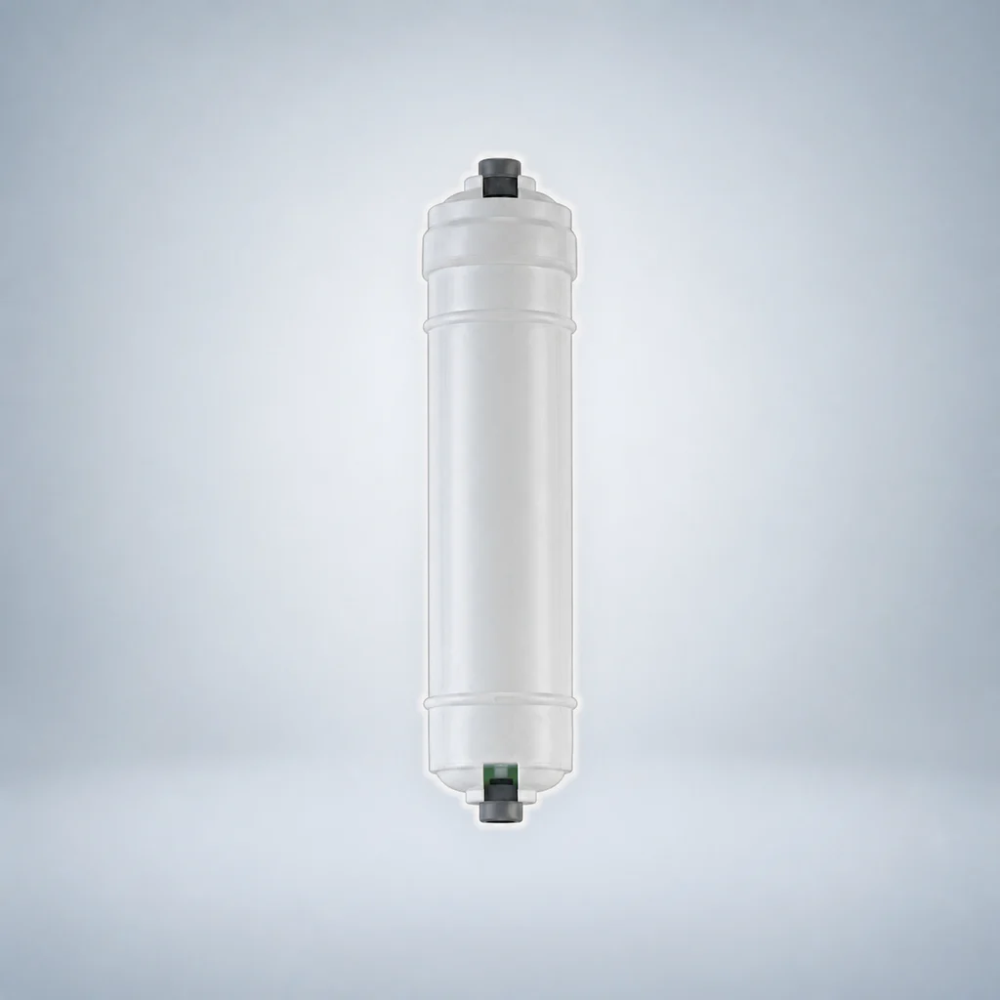
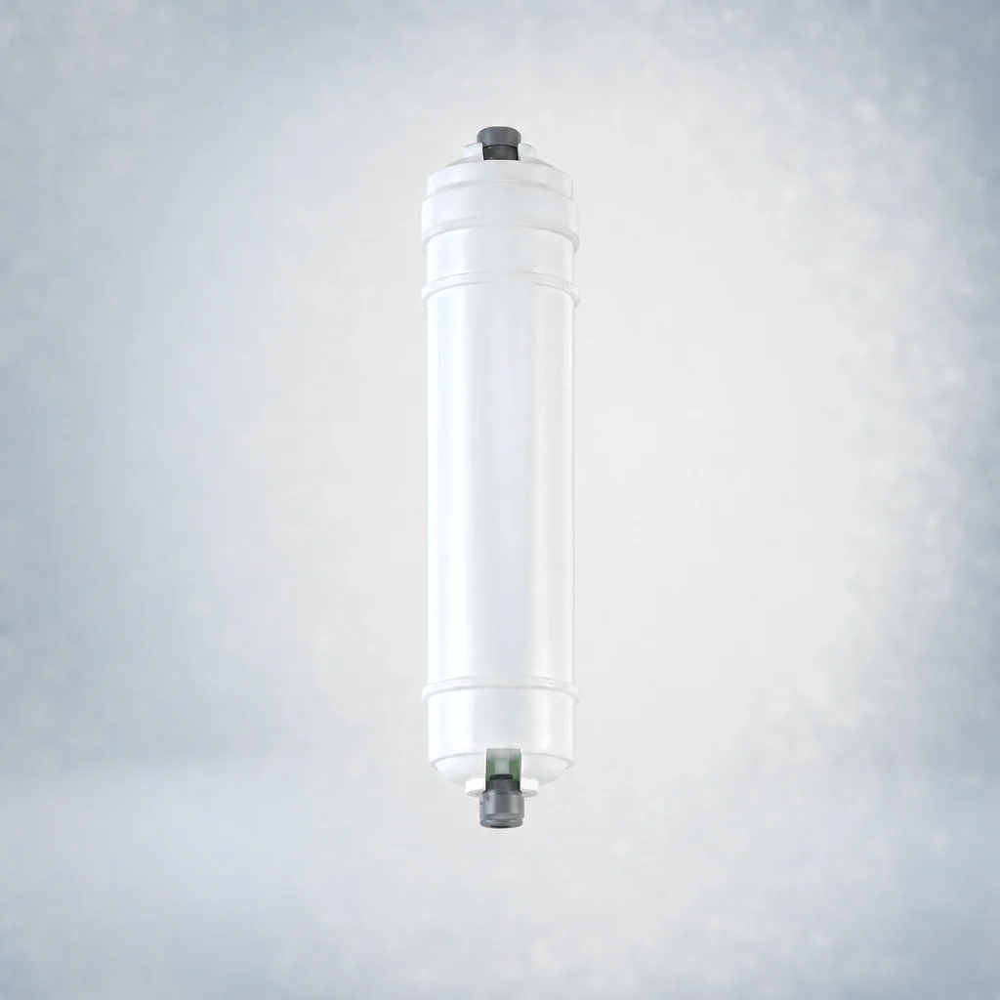
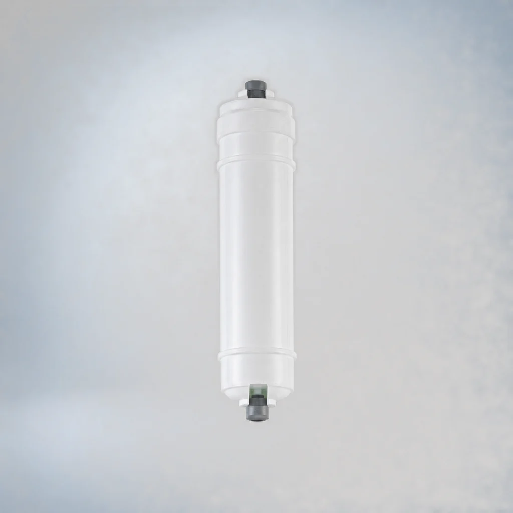

Lõi lọc CTO than khối từ gáo dừa tích hợp đầu nối nhanh – Dòng 2
- Dạng sản phẩm
- Đầu nối nhanh tích hợp, Dòng 2
- Vật liệu lọc
- Than hoạt tính dạng khối (CTO)
So sánh dòng sản phẩm, kiểu kết nối và các yêu cầu dự án đã được xem xét trước khi yêu cầu báo giá.
So sánh các model được liệt kê và mở trang chi tiết. Các bản ghi model được tính riêng với các kích thước có thể tùy chỉnh; mức độ phù hợp phải được xác nhận cho dự án của bạn.






Lõi lọc cặn PP tích hợp đầu nối nhanh – Dòng 2 là lõi lọc sơ bộ dành cho thiết bị lọc nước gia đình. Lõi thực hiện lọc thô nước đầu vào và được mô tả là lọc cặn, tạp chất, gỉ sét và chất lơ lửng.
Lõi lọc UDF than hoạt tính dạng hạt từ gáo dừa tích hợp đầu nối nhanh – Dòng 2 sử dụng than hoạt tính dạng hạt được mô tả là hấp phụ và giảm màu, mùi, clo dư, các hợp chất hydro halogen hóa và chất hữu cơ trong nước.
Lõi lọc CTO than khối từ gáo dừa tích hợp đầu nối nhanh – Dòng 2 được mô tả là giữ lại chất hữu cơ, các hạt và tạp chất khác, đồng thời hấp phụ và giảm màu, mùi, clo dư và các chất phóng xạ khác. Lõi cũng được mô tả là ức chế sự sinh sản của vi sinh vật, làm sạch nước và cải thiện vị nước.
Lõi lọc màng RO tích hợp đầu nối nhanh – Dòng 2 có độ chính xác lọc được công bố là 0.001–0.0001 micrometres. Tỷ lệ loại bỏ muối được công bố là trên 98%. Lõi được mô tả là cho phép các phân tử nước đi qua trong khi giữ lại thuốc trừ sâu, vi khuẩn, vi rút, ion kim loại nặng và các chất có hại khác; nước sau lọc được mô tả là có thể uống trực tiếp.
Lõi lọc màng UF tích hợp đầu nối nhanh – Dòng 2 sử dụng công nghệ màng siêu lọc sợi rỗng với độ chính xác lọc được công bố là 0.01 micrometres. Lõi được mô tả là giảm các hạt siêu mịn dạng đại phân tử, chất gây sốt, vi rút và vi khuẩn, trong đó tỷ lệ loại bỏ vi khuẩn được công bố là 99.9%, đồng thời giảm độ đục của nước.
Lõi lọc T33 cỡ lớn chứa than hoạt tính từ gáo dừa, tích hợp đầu nối nhanh – Dòng 2 chứa than hoạt tính từ gáo dừa đã được rửa bằng axit với chỉ số iốt được công bố là trên 1100. Thông tin sản phẩm mô tả khả năng hấp phụ mạnh, giảm màu, mùi và clo dư, tăng hàm lượng oxy, ức chế sự phát triển của vi sinh vật và cải thiện vị nước.